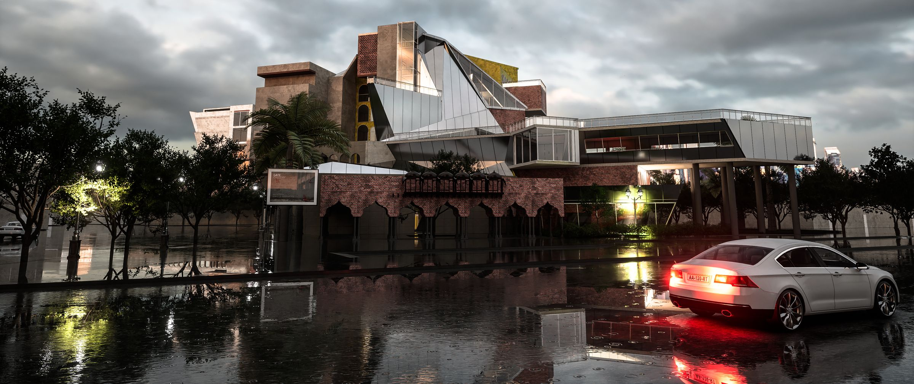

Haveli Hotel
A journey through time on Egerton Road

The haveli was a way of living: rooms around courts, life turned inward, hospitality as a craft. This hotel brings it back, and lets the present break in.
A 120-room hotel on Egerton Road, Lahore. Regulating lines and planes drawn from the site fracture the building, so that guests pass from spaces that recall the grandeur of the haveli into spaces that belong to now.
[site]
The site is on Egerton Road in central Lahore, opposite NUML University and next to the Luxus Grand hotel, in a busy metropolitan area. Its immediate context is a dense neighbourhood, with a narrow but secluded approach, a back alley and an old tomb close by. Site A is 3.4 kanals and site B is 22 kanals.
LDA bylaws require a 30 ft setback at the front and 13 ft on all other sides. They allow 60% ground coverage, 55% of that above ground, and a height limit of 300 ft.
[concept]
The design reimagines the lost art of manor living in the Indian subcontinent: the haveli. It creates a hotel that sets the past against modern sensibilities.
As guests move through the hotel, they make a journey through time. Fragmented planes, driven by the site, move them from spaces that recall the grandeur of the haveli to spaces that embrace modernity. This interplay between past and present asks guests to think about the essence of hospitality as it was once cultivated, and proposes its revival through design.
The project draws on Peter Eisenman's Wexner Center and Guggenheim Helsinki competition entry. It also pays tribute to Bernard Tschumi's architecture and disjunction, Eisenman's blurred zones and Bryan Cantley's speculative coolness.
[process]
The form comes from the site itself. Regulating lines are drawn from the site and its context, then raised into planes. Where the lines and planes intersect, a fragmented geometry appears, and it becomes the hotel's public heart. The same geometry is carried onto the next site, and the regulating lines continue into the culture centre built earlier in the same studio.
[speculation]
[plan iterations]
[the building]
A 120-room hotel. The ground floor holds the lobby, restaurant, courtyards, art gallery, seminar rooms and gift shops at the front. The back of the house sits in a separate wing with its own loading deck, inspection route, storage, laundry and kitchen. Room floors rise above around open courts, with a rooftop restaurant and roof garden, an infinity pool, a spa and a skylight bridge at the top.
The structure is a concrete frame of 1 ft beams and 9 in to 1.5 ft columns with diagonal bracing. Roofs are aluminium-clad concrete on steel framing, and some are green roofs.
[drawings]
Plans drawn at 1/64 in = 1 ft, the ground floor and master plan at 1/32 in = 1 ft. Levels are in feet.
[plans]
[sections]
[axonometric]
[renders]
Brick and haveli arches meet exposed concrete and faceted glass. The yellow arcade and the courts belong to the haveli; the angled glass volumes belong to the present.